날씨 · 기분 · 가격대 · 함께 먹는 사람에 따라 메뉴를 추천하는 API를
Spring Boot로 직접 구현하고 문서화 · 테스트 · 컨테이너 실행까지 확장한 기록
springboot-menu-recommendationlocalhost:8080 · Swagger localhost:8080/swagger-ui.html
시작 화면의 주황색 버튼 4개에 해당하는 API를 직접 구현하는 과제입니다.
작업 파일은 MenuService(추천 로직)와 MenuController(주소 매핑) 두 개이며,
화면(index.html)도 함께 확장했습니다.
여기에 더해 Swagger 문서화 · 자동 테스트 · Docker 컨테이너 실행까지 붙여 "실습용 코드"에서 끝나지 않도록 구성했습니다.
| 구분 | 기능 | 엔드포인트 | 학습 포인트 |
|---|---|---|---|
| 필수 ① | 날씨별 추천 | GET /api/menu/weather/{weather} | @PathVariable · 문자열 응답 |
| 필수 ② | 기분별 추천 | GET /api/menu/mood/{mood} | JSON 응답 (DTO 반환) |
| 필수 ③ | 가격대별 추천 | GET /api/menu/price/search | @RequestParam · 입력 검증 |
| 필수 ④ | 나만의 추천 | GET /api/menu/my/{companion} | 추천 기준 직접 설계 |
| 차별화 | Swagger 문서화 | GET /swagger-ui.html | @Tag · @Operation · @Parameter |
| 차별화 | 자동 테스트 | ./gradlew test | MockMvc 10종 검증 |
| 차별화 | 컨테이너 실행 | docker run -p 8080:8080 | 멀티 스테이지 빌드 · 비root 실행 |
| 구분 | 사용 기술 | 역할 |
|---|---|---|
| 언어 / 런타임 | Java 21 (Eclipse Temurin) | 애플리케이션 및 Docker 런타임 |
| 웹 | Spring Boot 3.4.5 (Spring MVC) | 내장 Tomcat, 요청 매핑, JSON 직렬화 |
| API 문서 | springdoc-openapi 2.8.13 | Swagger UI · /v3/api-docs |
| 테스트 | JUnit 5 + MockMvc + AssertJ | 상태 코드 · 응답 본문 자동 검증 |
| 빌드 / 배포 | Gradle 8.14.5 + Docker | bootJar, 컨테이너 이미지 생성 |
springboot-menu-recommendation/ ├─ build.gradle ├─ Dockerfile ← 신규: 멀티 스테이지 빌드 ├─ .dockerignore ← 신규 └─ src/ ├─ main/java/com/example/menu/ │ ├─ MenuApplication.java │ ├─ config/OpenApiConfig.java ← 신규: Swagger 문서 정보 │ ├─ controller/MenuController.java ← 수정: API 4개 추가 │ ├─ dto/MenuResponse.java │ └─ service/MenuService.java ← 수정: 추천 로직 추가 ├─ main/resources/static/index.html ← 수정: 화면 확장 └─ test/java/com/example/menu/ └─ MenuApplicationTests.java ← 수정: MockMvc 10종
이번에 추가한 코드는 예외 없이 두 군데로 나뉘어 들어갔습니다.
브라우저 / Swagger → MenuController → MenuService
(주소 해석 · 문장 조립) (메뉴를 고르는 규칙)
MenuService는 HTTP도 주소도 JSON도 모른 채 메뉴 이름만 돌려주고,
MenuController가 그것으로 문장이나 JSON을 조립합니다.
예를 들어 recommendByWeather("rainy")는 "칼국수"만 반환하고,
"rainy 날씨에 어울리는 메뉴는 칼국수입니다."라는 문장은 Controller가 만듭니다.
기존에 @GetMapping("/menu/{category}")가 이미 있었고,
이 매핑은 /menu 뒤의 한 칸을 전부 받아 갑니다.
그래서 가격 검색 주소를 /menu/price로 만들면 어느 메서드가 처리할지 모호해집니다.
| 주소 | /menu 뒤 칸 수 | 충돌 여부 |
|---|---|---|
/menu/{category} | 1칸 | 기존 매핑 (기준) |
/menu/weather/{weather} | 2칸 | 겹치지 않음 |
/menu/mood/{mood} | 2칸 | 겹치지 않음 |
/menu/price/search | 2칸 | 겹치지 않음 (그래서 /search를 붙임) |
/menu/my/{companion} | 2칸 | 겹치지 않음 |
추가한 4개는 모두 두 칸이고, 첫 칸 리터럴(weather · mood ·
price · my)이 서로 다르며 기존 json과도 달라 서로 간에도 충돌하지 않습니다.
매핑이 충돌하면 앱이 시작할 때 Ambiguous mapping 오류로 죽습니다.
./gradlew test의 컨텍스트 로딩 테스트가 이를 자동으로 잡아 줍니다.
MenuController에는 @RequestMapping("/api")가 붙어 있어,
메서드의 @GetMapping에는 /api를 빼고 적습니다.
@RequestMapping("/api") + @GetMapping("/menu/weather/{weather}")
= /api/menu/weather/{weather}
문서 상단의 제목과 설명은 OpenApiConfig에서 직접 지정했습니다.
springdoc이 Controller를 읽어 엔드포인트 목록은 자동으로 만들어 주지만, 문서 제목은 직접 넣어야 합니다.
@Configuration public class OpenApiConfig { @Bean public OpenAPI menuOpenAPI() { return new OpenAPI().info(new Info() .title("오늘 뭐 먹지? — 메뉴 추천 API") .version("v1.0.0") .description(""" Spring Boot 실습용 메뉴 추천 REST API입니다. - 실습과제 ①~④ (날씨 · 기분 · 가격대 · 함께 먹는 사람) - ②는 JSON(MenuResponse), 나머지는 문자열로 응답합니다. - 가격대별 추천은 min > max인 경우 400 Bad Request를 반환합니다. """)); } }
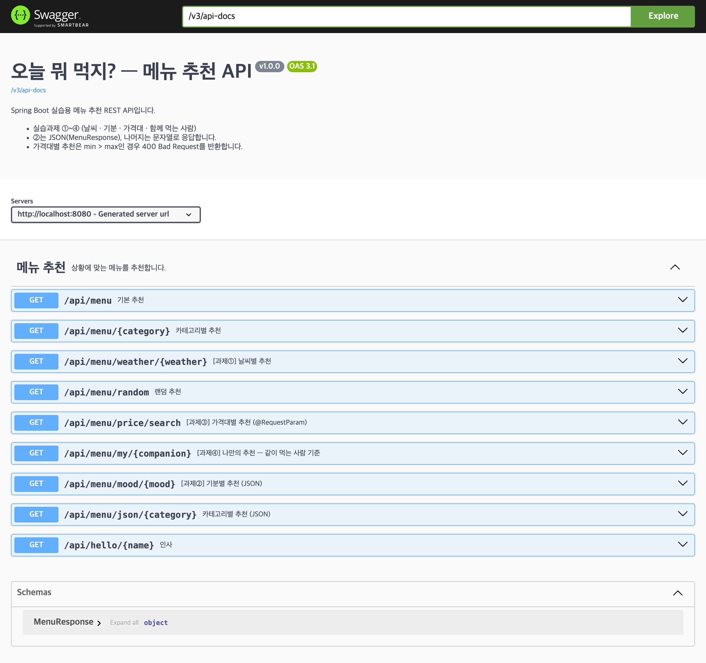
sunny / rainy / hot / cold 네 가지 날씨에 따라
다른 메뉴를 추천합니다. 정해진 값이 아니면 안내 문구를 반환합니다.
public String recommendByWeather(String weather) { return switch (weather) { case "sunny" -> "비빔밥"; case "rainy" -> "칼국수"; case "hot" -> "냉면"; case "cold" -> "김치찌개"; default -> NOT_FOUND; }; }
@GetMapping("/menu/weather/{weather}") public String menuByWeather(@PathVariable("weather") String weather) { String menu = menuService.recommendByWeather(weather); if (MenuService.NOT_FOUND.equals(menu)) { return weather + "에 대한 " + menu + ". (sunny, rainy, hot, cold 중에서 골라 주세요)"; } return weather + " 날씨에 어울리는 메뉴는 " + menu + "입니다."; }
반환 타입이 String이면 Spring이 그 문자열을 그대로 응답 본문으로 내보냅니다
(Content-Type: text/plain;charset=UTF-8).
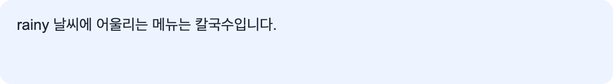
weather/rainy — 비 오는 날은 칼국수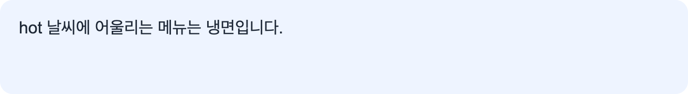
weather/hot — 값을 바꾸면 결과가 달라진다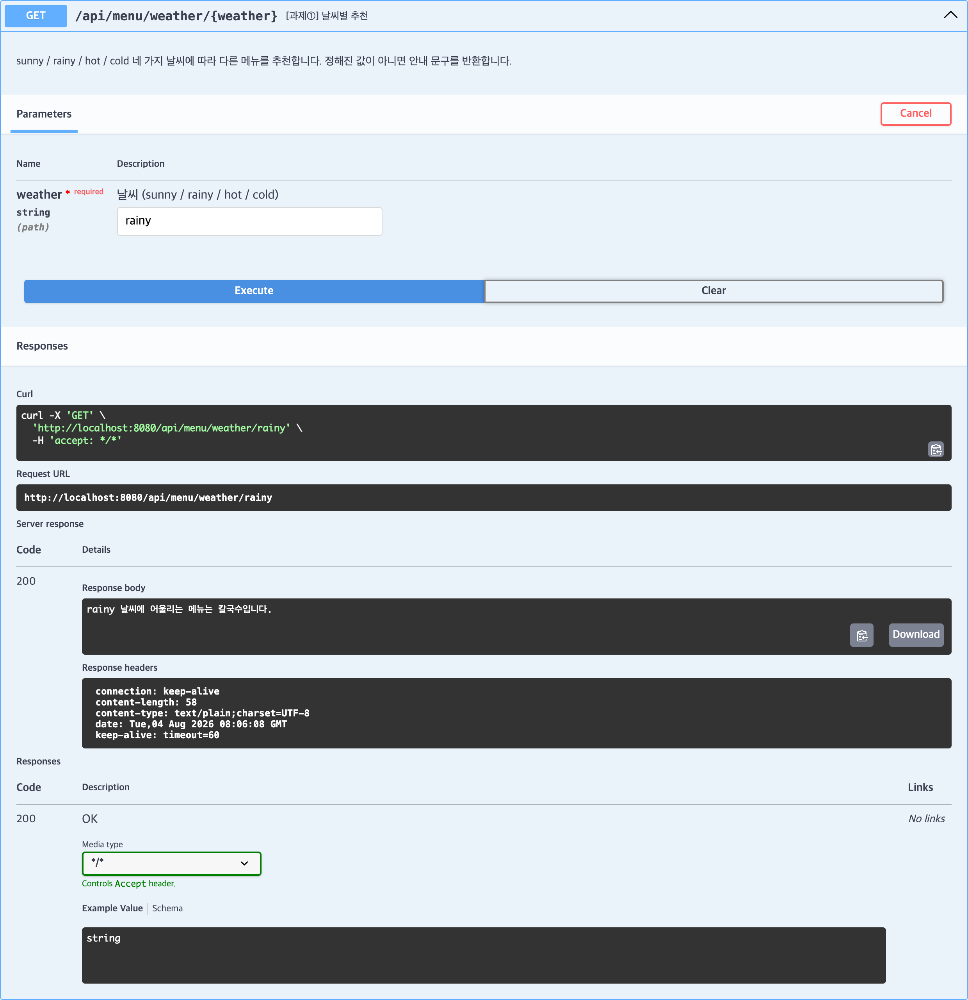
happy / sad / tired / stressed에 따라 추천합니다.
다른 과제와 달리 String이 아닌 MenuResponse 객체를 반환하므로
Spring이 JSON으로 변환합니다.
@GetMapping("/menu/mood/{mood}") public MenuResponse menuByMood(@PathVariable("mood") String mood) { String menu = menuService.recommendByMood(mood); return new MenuResponse( mood, menu, MenuService.NOT_FOUND.equals(menu) ? mood + "에 대한 " + menu + ". (happy, sad, tired, stressed 중에서 골라 주세요)" : "기분이 " + mood + "일 땐 " + menu + " 어떠세요?" ); }
@RestController가 붙어 있으면 객체를 돌려주는 순간 Spring이 JSON으로 바꿔 내보냅니다.
따로 변환 코드를 쓰지 않습니다. 이 변환을 담당하는 것이 Jackson이며
spring-boot-starter-web에 이미 들어 있습니다.
MenuResponse는 record입니다. Jackson은 record의 필드 이름을 그대로 JSON 키로 씁니다.
public record MenuResponse(String category, String menu, String message) { }
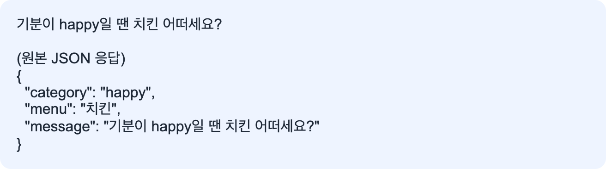
mood/happy — message를 문장으로 보여주고 원본 JSON을 함께 표시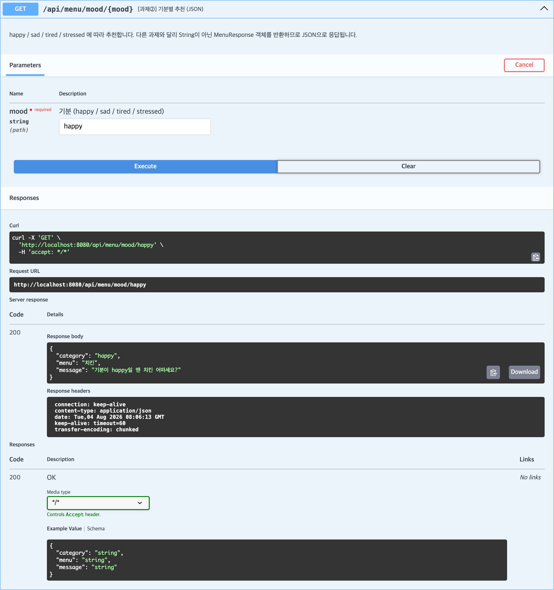
content-type: application/json, 세 필드가 직렬화됨앞의 두 과제와 다른 점이 있습니다. 값을 두 개, 그것도 주소 경로가 아니라
?min=5000&max=10000 형태로 받습니다.
| 구분 | 주소 모양 | 애노테이션 |
|---|---|---|
| 경로의 일부 | /api/menu/mood/happy | @PathVariable |
| 질의 문자열 | /api/menu/price/search?min=5000&max=10000 | @RequestParam |
@GetMapping("/menu/price/search") public String menuByPrice(@RequestParam("min") int min, @RequestParam("max") int max) { if (min > max) { throw new ResponseStatusException( HttpStatus.BAD_REQUEST, "min(" + min + ")은 max(" + max + ")보다 클 수 없습니다." ); } String menu = menuService.recommendByPrice(max); return min + "~" + max + "원 가격대라면 " + menu + " 어떠세요?"; }
파라미터 타입이 String이 아니라 int인 점을 눈여겨봤습니다.
주소로 들어오는 값은 원래 전부 문자열인데 Spring이 int로 바꿔 줍니다.
숫자가 아닌 값(?min=abc)이 오면 변환에 실패해 Spring이 자동으로 400을 반환합니다.
| 조건 | 추천 메뉴 |
|---|---|
max ≤ 6,000원 | 김밥 |
max ≤ 12,000원 | 돈가스 |
| 그 외 | 소고기 구이 |
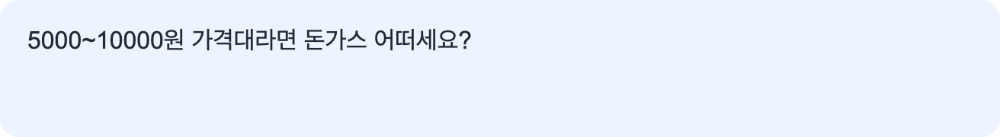
min=5000&max=10000 — 12,000원 이하 구간이므로 돈가스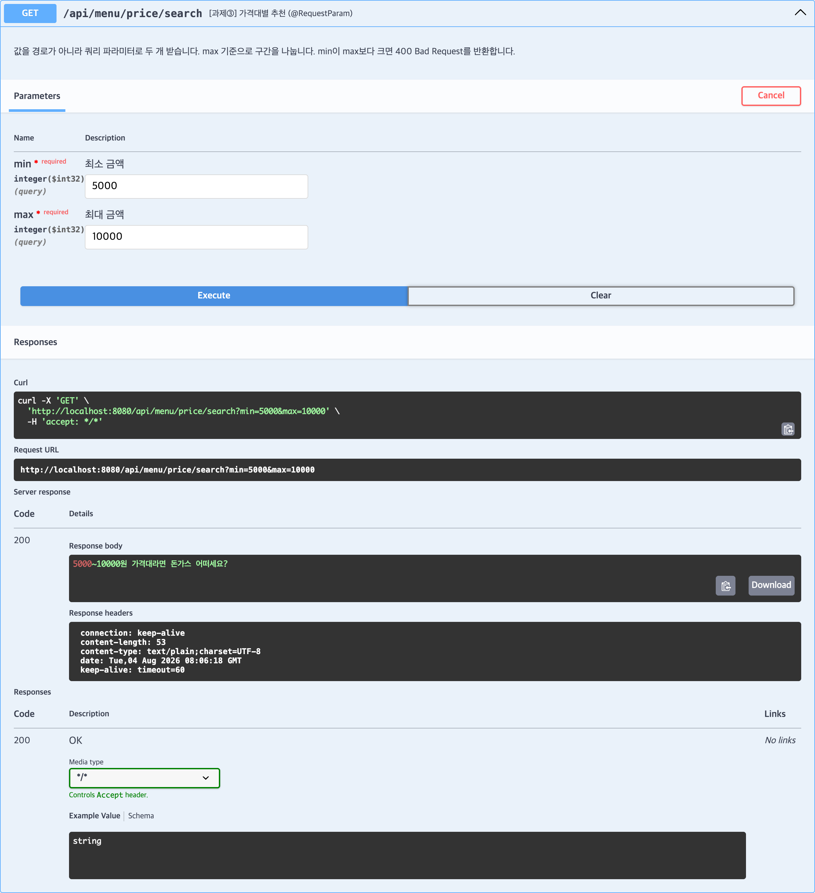
Request URL에 반영됨추천 기준을 "누구와 함께 먹는가"로 설계했습니다.
| 값 | 의미 | 추천 메뉴 |
|---|---|---|
solo | 혼밥 | 라면 |
friend | 친구와 함께 | 피자 |
family | 가족과 함께 | 불고기 |
| 그 외 | 정해지지 않은 값 | 기존 randomMenu()로 무작위 추천 |
public String recommendByCompanion(String companion) { return switch (companion) { case "solo" -> "라면"; case "friend" -> "피자"; case "family" -> "불고기"; default -> randomMenu(); // ← 기존 menus 리스트를 재사용 }; }
앞의 세 과제와 달리 default에서 안내 문구가 아니라
이미 만들어져 있던 randomMenu()를 호출합니다.
메뉴 목록을 새로 만들지 않고 기존 메서드를 그대로 재사용한 것입니다.
@GetMapping("/menu/my/{companion}") public String menuByCompanion(@PathVariable("companion") String companion) { String menu = menuService.recommendByCompanion(companion); return switch (companion) { case "solo" -> "혼자 먹기 좋은 " + menu + " 어떠세요?"; case "friend" -> "친구랑 나눠 먹기 좋은 " + menu + " 어떠세요?"; case "family" -> "가족과 함께라면 " + menu + " 어떠세요?"; default -> "오늘은 " + menu + " 어떠세요?"; }; }
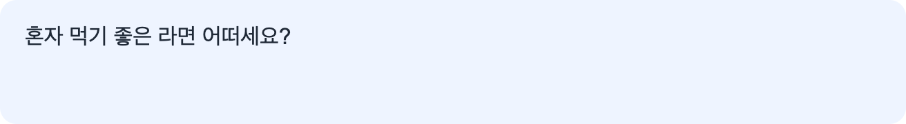
my/solo — 혼밥 추천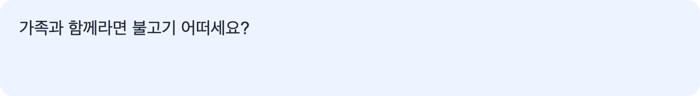
my/family — 조건에 따라 결과가 달라진다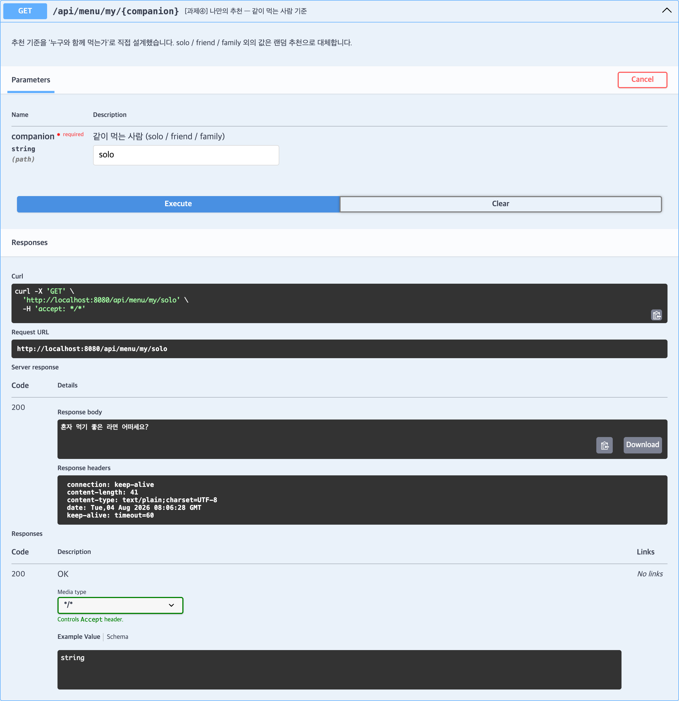
my/solomin=20000&max=5000은 서버 잘못이 아니라 요청 잘못입니다.
이럴 때 200 OK에 "잘못됐다"고 적어 보내면 프로그램은 성공과 실패를 구분할 수 없습니다.
HTTP 상태 코드로 알려 주는 것이 REST의 방식입니다.
| 검증 조건 | 처리 결과 |
|---|---|
min > max | 400 Bad Request + 안내 메시지 |
min 또는 max가 숫자가 아님 | 400 Bad Request (Spring 자동 변환 실패) |
| 파라미터 누락 | 400 Bad Request (required 기본값) |
min ≤ max | 200 정상 추천 결과 반환 |
설정이 하나 더 필요했습니다 — Spring Boot 2.3부터
server.error.include-message의 기본값이 never입니다.
이 상태에서는 ResponseStatusException에 적은 안내 문구가 응답 본문에서
빠진 채 상태 코드만 나갑니다.
server.error.include-message=always
// 설정 전 (기본값 never) {"timestamp":"…","status":400,"error":"Bad Request","path":"/api/menu/price/search"} // 설정 후 (always) {"timestamp":"…","status":400,"error":"Bad Request", "message":"min(20000)은 max(5000)보다 클 수 없습니다.","path":"/api/menu/price/search"}
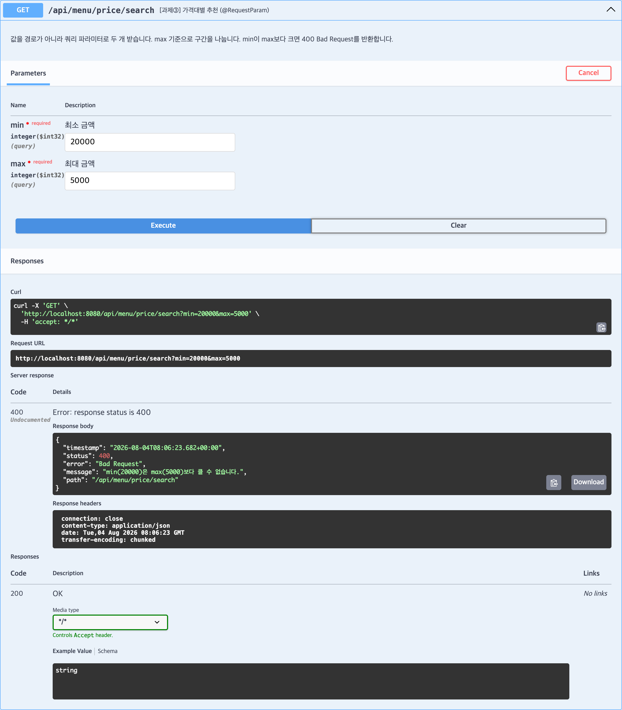
min=20000, max=5000 — 400 Bad Request와 안내 메시지가 함께 반환됨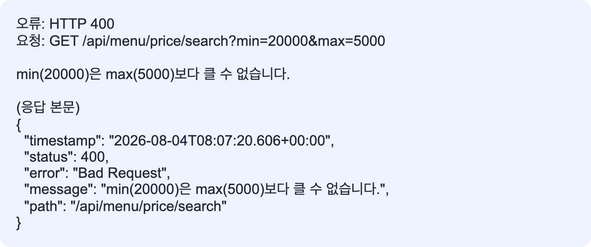
처음 구현했을 때 없는 값을 넣으면 이런 응답이 나왔습니다.
없는날씨 날씨에 어울리는 메뉴는 추천 가능한 메뉴가 없습니다입니다.
"…없습니다"와 "입니다."가 이어 붙어 말이 되지 않습니다.
문장을 조립하기 전에 "메뉴를 찾았는지"를 먼저 확인해야 했습니다.
그래서 실패 문구를 MenuService의 상수로 분리했습니다.
public static final String NOT_FOUND = "추천 가능한 메뉴가 없습니다";
if 조건이 조용히 어긋납니다.NOT_FOUND.equals(menu) 순서 — menu가 null이면
menu.equals(...)는 NullPointerException이 납니다.
확실히 null이 아닌 쪽을 앞에 두었습니다.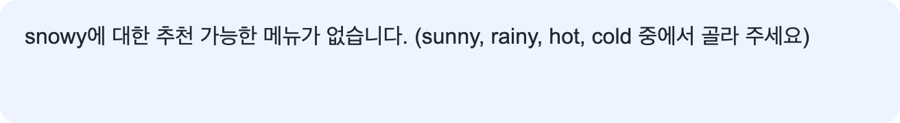
기본 제공 화면은 과제별 버튼이 하나씩뿐이라 값을 바꿔 볼 수 없었습니다. 다음을 추가했습니다.
snowy · angry · pet)과
잘못된 가격 범위를 회색 버튼으로 구분message를 문장으로 먼저 보여주고 원본 JSON을 함께 표시!response.ok에서 바로 예외를 던져
오류: HTTP 400만 보였습니다. 상태 코드와 응답 본문을 함께 보여주도록 수정// 400 같은 실패 응답도 본문을 그대로 보여준다. if (!response.ok) { const reason = isJson && body.message ? body.message : ""; result.textContent = `오류: HTTP ${response.status} ${response.statusText}\n` + `요청: GET ${url}\n\n` + (reason ? `${reason}\n\n` : "") + (isJson ? `(응답 본문)\n${JSON.stringify(body, null, 2)}` : body); return; }
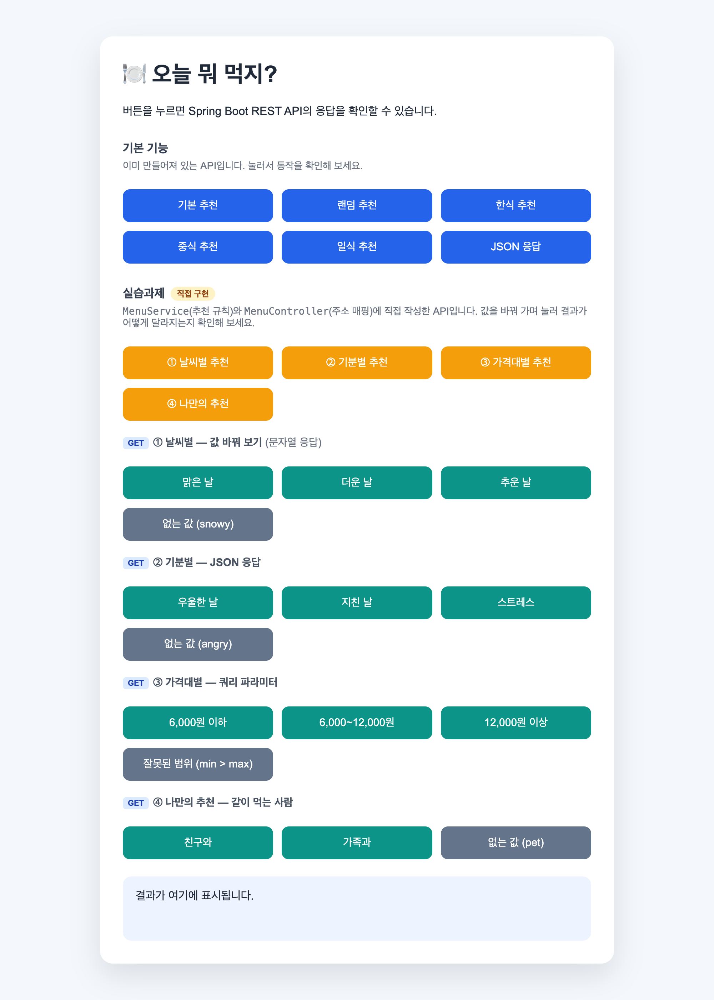
엔드포인트 목록만 나오는 기본 상태에서, 각 API의 목적과 입력 예시까지 문서에 담았습니다.
@Tag(name = "메뉴 추천", description = "상황에 맞는 메뉴를 추천합니다.") public class MenuController { @Operation(summary = "[과제③] 가격대별 추천 (@RequestParam)", description = "값을 경로가 아니라 쿼리 파라미터로 두 개 받습니다. …") @GetMapping("/menu/price/search") public String menuByPrice( @Parameter(description = "최소 금액", example = "5000") @RequestParam("min") int min, @Parameter(description = "최대 금액", example = "10000") @RequestParam("max") int max) { … }
example을 지정해 두면 Swagger UI에서 Try it out을 눌렀을 때
입력칸이 예시 값으로 미리 채워집니다. 앞의 실행 화면들이 모두 그 상태입니다.
MockMvc로 상태 코드 · 응답 본문 · JSON 경로를 자동 검증했습니다.
서버를 직접 띄우지 않고 DispatcherServlet에 가짜 요청을 보내 응답을 확인합니다.
화면을 눌러 보는 수동 확인과 달리, 코드를 고친 뒤에도 같은 검증을 반복할 수 있습니다.
@SpringBootTest @AutoConfigureMockMvc class MenuApplicationTests { @Autowired private MockMvc mockMvc; @Test @DisplayName("과제② 기분별 추천 - MenuResponse가 JSON 세 필드로 직렬화된다") void moodApiReturnsJson() throws Exception { mockMvc.perform(get("/api/menu/mood/happy")) .andExpect(status().isOk()) .andExpect(jsonPath("$.category").value("happy")) .andExpect(jsonPath("$.menu").value("치킨")) .andExpect(jsonPath("$.message").exists()); } }
| 테스트 메서드 | 검증 내용 |
|---|---|
contextLoads | Spring Container 기동 · 매핑 충돌 여부 |
weatherApiReturnsDifferentMenus | 과제① 날씨에 따라 다른 문자열 반환 |
weatherApiGuidesOnUnknownValue | 과제① 정해지지 않은 값의 안내 문구 |
moodApiReturnsJson | 과제② JSON 세 필드 직렬화 |
priceApiSplitsByMax | 과제③ 가격 3구간이 각각 다른 메뉴 반환 |
priceApiRejectsInvalidRange | 과제③ min > max → 400 |
priceApiRejectsNonNumericInput | 과제③ 숫자가 아닌 입력 → 400 |
companionApiReturnsPersonalizedMenu | 과제④ 동행별 결과 분기 |
existingApisStillWork | 기존 API 회귀 확인 |
openApiDocumentationExposesAssignmentApis | OpenAPI 문서에 과제 API 4종 노출 |
$ ./gradlew clean test > Task :clean > Task :compileJava > Task :compileTestJava > Task :test BUILD SUCCESSFUL in 2s 5 actionable tasks: 5 executed ──────────────────────────────────────────── 총 10개 / 실패 0 / 건너뜀 0 / 0.47초
멀티 스테이지 빌드로 빌드 환경과 실행 환경을 분리했습니다. 빌드에는 JDK가 필요하지만 실행에는 JRE면 충분하므로, 최종 이미지에는 컴파일러를 넣지 않습니다.
FROM eclipse-temurin:21-jdk AS builder # 1단계: jar 생성 WORKDIR /build COPY gradlew ./ COPY gradle gradle COPY build.gradle settings.gradle ./ RUN chmod +x gradlew && ./gradlew dependencies --no-daemon COPY src src RUN ./gradlew bootJar --no-daemon -x test FROM eclipse-temurin:21-jre # 2단계: 실행만 WORKDIR /app RUN useradd --create-home --shell /bin/bash appuser USER appuser COPY --from=builder /build/build/libs/*.jar app.jar EXPOSE 8080 ENTRYPOINT ["java", "-jar", "app.jar"]
그 외 적용한 것:
appuser 계정으로 실행.dockerignore — build/, .gradle/,
bin/, .git/ 제외$ docker build -t menu-recommendation:latest . => naming to docker.io/library/menu-recommendation:latest done $ docker images menu-recommendation REPOSITORY TAG SIZE menu-recommendation latest 567MB $ docker run -d --name menu-app -p 8080:8080 menu-recommendation:latest $ docker ps NAMES IMAGE STATUS PORTS menu-app menu-recommendation:latest Up 7 minutes 0.0.0.0:8080->8080/tcp $ docker logs menu-app INFO 1 --- [main] com.example.menu.MenuApplication : Starting MenuApplication v0.0.1-SNAPSHOT using Java 21.0.11 with PID 1 (/app/app.jar started by appuser in /app) INFO 1 --- [main] o.s.b.w.embedded.tomcat.TomcatWebServer : Tomcat started on port 8080 (http) with context path '/' INFO 1 --- [main] com.example.menu.MenuApplication : Started MenuApplication in 0.733 seconds
이 보고서의 모든 Swagger · 화면 캡처는 위 Docker 컨테이너
(http://localhost:8080)에서 실행한 결과입니다.
즉 이미지 빌드부터 API 동작까지 하나의 흐름으로 검증되었습니다.
ResponseStatusException에 안내 문구를 적었는데 응답 본문에 나타나지 않았습니다.
Spring Boot 2.3부터 server.error.include-message의 기본값이 never이기 때문이었고,
always로 바꿔 해결했습니다.
에러 메시지에 내부 정보가 새어 나가는 것을 막기 위한 안전 장치이므로,
실제 서비스에서는 켤지 말지 신중히 판단해야 한다는 점도 함께 알게 되었습니다.
jsonPath("$.message") 검증이 실패했습니다.
MockMvc는 서블릿 컨테이너의 /error 포워딩을 거치지 않아 에러 본문이 생성되지 않았습니다.
상태 코드와 함께 실제로 던져진 예외와 그 사유를 검증하는 방식으로 바꾸었고,
본문에 메시지가 실리는지는 실행 중인 서버에서 따로 확인했습니다.
.andExpect(status().isBadRequest())
.andExpect(result -> {
Exception thrown = result.getResolvedException();
assertThat(thrown).isInstanceOf(ResponseStatusException.class);
assertThat(((ResponseStatusException) thrown).getReason())
.contains("min(20000)", "max(5000)", "클 수 없습니다");
});
"…없습니다" + "입니다." 형태로 문장이 겹쳤습니다.
실패 문구를 NOT_FOUND 상수로 분리하고, 문장을 조립하기 전에 분기하도록 수정했습니다.
@PathVariable과 @RequestParam의 적용 상황을 구분하고 실제 엔드포인트에 사용했다.record DTO와 Jackson 직렬화로 확인했다./menu/{category} 매핑과 충돌하지 않도록 주소를 설계하는 과정을 거쳤다.server.error.include-message 설정까지 확인했다.| 평가 항목 | 결과 | 근거 |
|---|---|---|
| 필수 API 4종 | 완료 | 날씨 · 기분 · 가격대 · 동행 실행 화면과 자동 테스트 |
| API 문서화 | 완료 | Swagger UI 및 /v3/api-docs, 엔드포인트 9종 노출 |
| 입력 검증 | 완료 | min > max · 숫자 아님 · 파라미터 누락 3가지 모두 400 |
| 화면 확장 | 완료 | 값 변형 · 실패 케이스 버튼, 오류 본문 표시 |
| 자동 테스트 | 완료 | MockMvc 10종, BUILD SUCCESSFUL |
| 컨테이너 실행 | 완료 | 멀티 스테이지 Dockerfile, 8080 포트 실행 |
enum으로 바꾸면 오타를 컴파일 단계에서 잡을 수 있다.Map이나 설정 파일로 분리하면
코드 수정 없이 메뉴를 바꿀 수 있다.spring-boot-starter-validation과 DTO 검증을 적용할 수 있다.menuByCategory에는 아직 5-2의 문장 겹침 문제가 남아 있어 동일하게 정리할 수 있다.